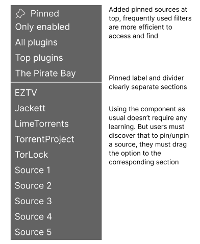

Tiverton Website Redesign:
Redesigning an outdated government website to make it more user-friendly.
currently interested in concurrency

Redesigning an outdated government website to make it more user-friendly.

Conducting user research on vending machines.

Designed a more accessible dropdown menu component with more features.

Iteratively designed various screens for an AI startup with a team of three other students.